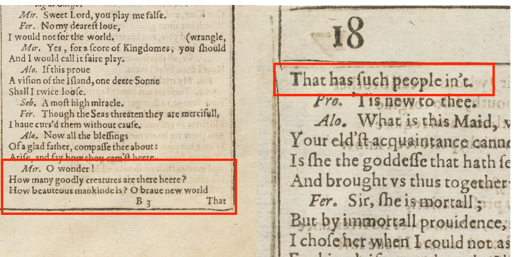
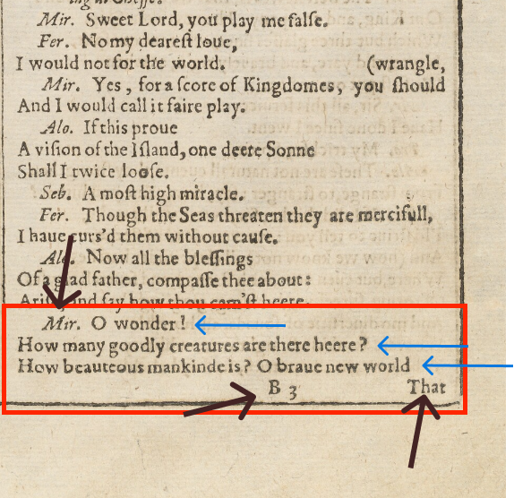
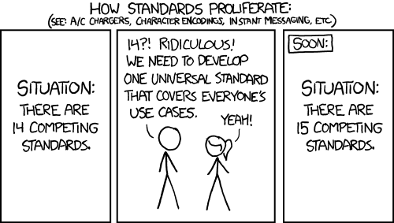

Joey Takeda, SFU DHIL
October 26, 2022
Slides and Materials: http://www.sfu.ca/~takeda/teiworkshop/
Unceded territory of the səl̓ilw̓ətaʔɬ (Tsleil-Waututh), kʷikʷəƛ̓əm (Kwikwetlem), Sḵwx̱wú7mesh Úxwumixw (Squamish), and xʷməθkʷəy̓əm (Musqueam) Nations
TEI Workshop homepage: http://www.sfu.ca/~takeda/teiworkshop/
Slides: http://www.sfu.ca/~takeda/teiworkshop/2022-10-26/
Introduction to text encoding
Overview of XML and TEI
TEI Editing practice!
Imagine you're creating an edition of The Tempest
Try formatting Miranda's famous speech, including everything you think may be important to capture
(Downloadable DOCX of speech)
Try to make the formatting as close to the original as possible

What did you notice about the text? What did you include in your transcription?
All acts of transcription and writing are about encoding
Looking at textual clues to know what something is (and what it isn't)
E.g. We think (English) paragraphs look like blocks of text; (English) sentences look like words with a period at the end; et cetera
At its core, textual encoding is a way of identifying and differentiating bits of text from other bits of texts.
We do this all the time!
Italics for emphasis
Underlining for titles
Bold for extra-emphasis
Quotation marks for outside attribution
or skepticism
All capitals to YELL
+++

Italics to mark speech prefix; placement of the page's signature; etc
But these are contextual and local
E.g. different types of punctuation for levels of quotation
And they are subject to varying interpretations
E.g. I think these quotation marks denote a term, but maybe the author is just being sarcastic...
Accessibility
Distribution
Flexibility
Interoperability
Convertibility (i.e. from one format to another)
Analysis (Distant Reading, et cetera)
Answering existing (and asking new) research questions
In the beginning: symbols (_underlined_ | **italicized** | ~struckout~)
This describes formatting nicely, but doesn't describe *what* it is
XML = eXtensible Markup Language
XML is not a set language unto itself, but a grammar
There is nothing inherent about the function of XML
It is purely a structure--a way of organizing
Anyone can conceive of an XML dialect (e.g. it is extensible)
HTML (HyperText Markup Language: Every website)
KML (Keyhole Markup Language: Google Maps)
RDF (Resource Description Framework: Library catalogues)
SVG (Scalable Vector Graphics: Digital Images)
OOXML (Open Office XML: This presentation, word documents, et cetera)
XML is hierarchical
XML is a tree-like structure
And is often described in genealogical terms
Think of the hierarchy of the book:
Book
Chapters
Sections
Paragraphs
Sentences
Words
Letters
<book>
<chapter>
<section>
<paragraph>
<sentence>
<word>
<letter></letter>
</word>
</sentence>
</paragraph>
</section>
</chapter>
</book>
The two pointy brackets is called an element
E.g. <book> would be called the book element
All elements have start and end tags
E.g. <book> is the start tag and </book> is the end tag
Elements can also have attributes and each attribute must have a value
E.g. <book type= "primary"> has a type attribute with the value of primary
(Think of attributes as you would in everyday life; people don't have "height" or "age" without a value)
Elements cannot overlap
<sentence><word>Word1</word></sentence> is right
<sentence><word>Word1</sentence></word> is wrong
Elements nest and use genealogical terms
E.g. the <book> is the parent of <chapter>. Words are descendants of a paragraph.
There is always a root element
<shelf>
<book title="Fifteen Dogs" author="André Alexis">
<chapter>
...
</chapter>
</book>
<book title="I Am A Cat" author="Natsume Sōseki">
<chapter>
<section>
...
</section>
</chapter>
</book>
</shelf>
<bookcase>
<shelf>
<book title="Fifteen Dogs" author="André Alexis">
...
</book>
<book title="I Am A Cat" author="Natsume Sōseki">
...
</book>
</shelf>
<shelf>
<book title="Chorus of Mushrooms" author="Hiromi Goto">
...
</book>
<book title="The Jade Peony" author="Wayson Choy">
...
</book>
</shelf>
</bookcase>

https://xkcd.com/927/
Situation: There are 14 competing standards.
14!? Ridiculous! We need to develop one universal standard that covers everyone's use cases. Yeah!
Soon: Situation: There are 15 competing standards.
All texts must be called <text>
All divisions (whether they be chapters, sections, et cetera) must be called <div>
All paragraphs must be called <p>
All words must be called <w>
+++
A set of guidelines for encoding text
A non-profit organization
A community or consortium of users
Website: https://tei-c.org/
Currently in its 5th major revision (P5 4.5.0)
Used by many projects across the world in many different languages and for many different reasons
Early English Books Online: https://www.proquest.com/eebo/
Oxford Text Archive: https://ota.bodleian.ox.ac.uk/repository/xmlui/
The Map of Early Modern London: https://mapoflondon.uvic.ca/
Landscapes of Injustice: https://loi.uvic.ca/archive/
Root <TEI> element
A <teiHeader> that describes both the file and the primary source that you are transcribing (if applicable)
A <text> that contains the text of the document
Within text, you can have a <front>, <body>, or <back>
<TEI xmlns="http://www.tei-c.org/ns/1.0">
<teiHeader>
<fileDesc>
<titleStmt>
<title>Title</title>
</titleStmt>
<publicationStmt>
<p>Publication Information</p>
</publicationStmt>
<sourceDesc>
<p>Information about the source</p>
</sourceDesc>
</fileDesc>
</teiHeader>
<text>
<body>
<p>Some text here.</p>
</body>
</text>
</TEI>
A language that describes how a text should be displayed online or in print: "performative and expressive significance of the input" vs "the aesthetics of the output".
A programming language: encoding your texts in TEI does not automatically do anything to them
Caveat: There are many, many tools for transforming TEI into other formats (Word documents, PDFs, and, of course, websites)
Offers a rich vocabulary and method to encode:
Bibliographic and structural features: page breaks, headers, footers, page numbers, line breaks, divisions, paragraphs, line groups, etc
Interpretative features: stage movement, emphasis, place names, proper names, dialogue direction, etc
Editorial apparatus: hands, witnesses, collation, gaps, additions, deletions, etc
Linguistic features: morphemes, feature structures, orthographic form, etc
Spoken features: incidents, pauses, shifts, "communicative phenomenon", etc
Metadata: various classification schemes, provenance, manuscript description, etc
+++++
Note that the TEI is huge (585 elements)
No one uses the entirety of the TEI tagset
Individual projects customize the TEI for their own needs, usually using a small subset of the overall tagset
E.g. Drama projects will use the drama tagset (<sp> for speech, <speaker> for speaker, et cetera) and discard the linguistic/dictionary tagset (<entry> for dictionary entries, <m> for morpheme, etc).
Let's try encoding the speech!
Online editor: https://sfu.ca/~takeda/teiworkshop/2022-10-26/index.html
Thoughts? Reflections?
TEI Guidelines: https://tei-c.org
TEI By Example: https://teibyexample.org/
My email: takeda@sfu.ca
Digital Humanities Innovation Lab: dhil@sfu.ca
DHIL's website: https://dhil.lib.sfu.ca
You all for attending!
Thanks to Ali Moore, Nicole White, and Sarah Zhang for your suggestions and comments on earlier versions of this workshop